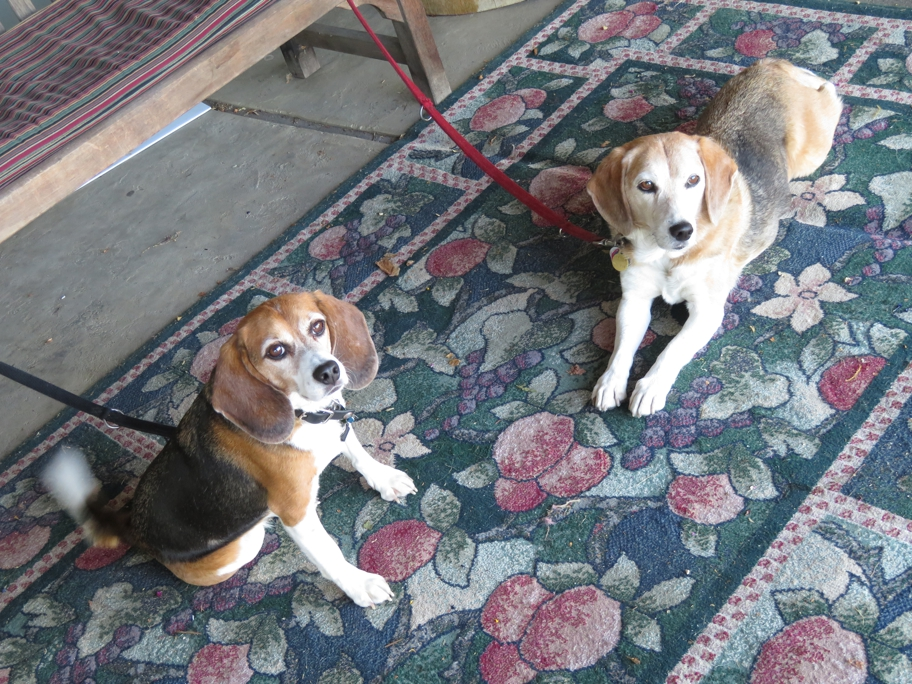

Wy'East Vineyards, a favorite from last visit, is in the fruit-growing Hood River valley south of the town of Hood River. The carpet on their porch is appropriate to the setting. After this and another winery stop we drove around the recommended scenic route, spitting cherry pits out the window as we drove.
Hood River Huxley Beagle Oregon Wallace Beagle